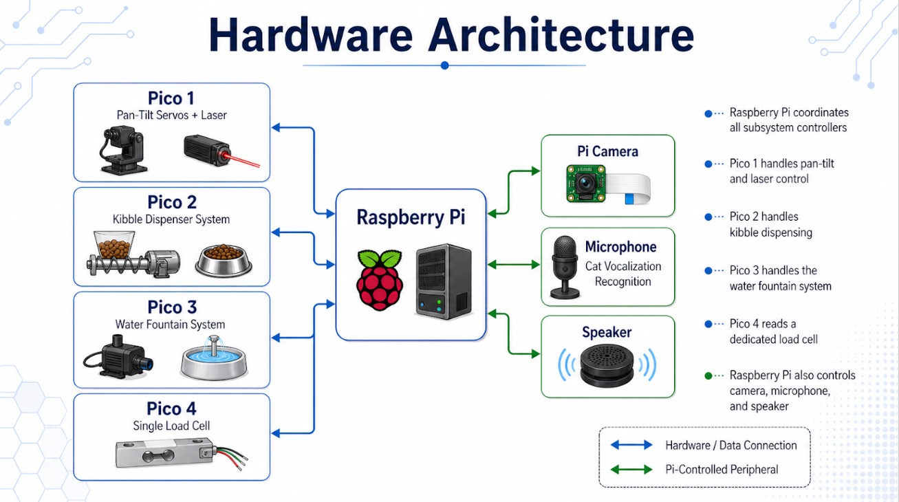
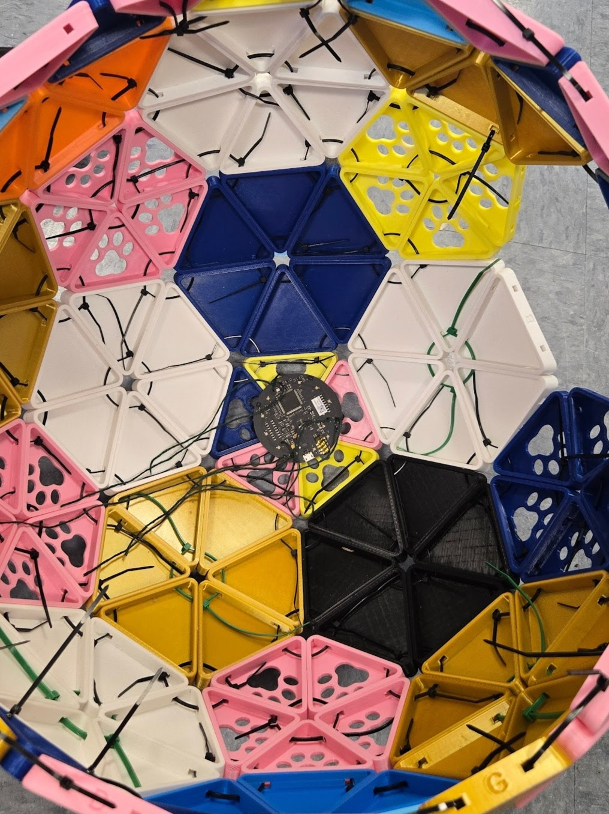

Timeline: Spring 2026 Semester
Course: Embedded Systems - Brandeis University
Team: Matthew Yue, Garret Rieden, Adam Rieden, Yuxuan Liu
My Role: Hardware Testing & Integration
Project Overview
Catopia is a smart cat care system designed to help owners monitor and support their cat's daily needs when they are not physically present. The system combines automated feeding, water tracking, live video monitoring, interactive laser play, and vocalization analysis into one connected platform built around embedded systems engineering.
The system uses a Raspberry Pi as the central controller running a FastAPI backend, frontend dashboard, camera stream, SQLite database, and audio processing. Multiple Raspberry Pi Pico microcontrollers handle low-level hardware control for the food dispenser, water pump, load cells, and pan-tilt laser system. This modular architecture demonstrates practical applications of embedded systems, real-time sensor integration, and full-stack IoT development.
Key Features
- Automated Kibble Dispenser: Motorized auger feeder with stepper motor control that dispenses measured amounts of food based on load cell weight tracking
- Water Monitoring & Pump System: Load cell tracks water consumption while a relay-controlled pump maintains water levels in the bowl
- Interactive Pan-Tilt Laser Toy: Dual-servo system creates randomized laser movements to stimulate natural hunting behavior and mental enrichment
- Live Camera Feed: Real-time video monitoring accessible through the web dashboard
- Cat Vocalization Recognition: Microphone-based system using MFCC feature extraction and Hidden Markov Models to classify meows into behavioral contexts (food-seeking, isolation, brushing)
- Voice Memo Playback: Bluetooth speaker allows owners to record and play voice memos to comfort their cat
- Consumption Tracking: Median-filtered load cell readings detect stable weight changes to accurately log food and water intake events
- Web Dashboard: Browser-based interface for live monitoring, historical data visualization, device control, and system status
- SQLite Database: Stores daily reports, voice logs, and consumption events for trend analysis and health monitoring
System Architecture
The system uses a modular two-layer architecture:
Raspberry Pi (Main Controller): Runs FastAPI backend server, SQLite database, frontend dashboard, camera stream, and audio processing for vocalization recognition.
Raspberry Pi Pico Microcontrollers (Hardware Control Layer):
- Pico 1: Controls pan-tilt servos and laser module for interactive play
- Pico 2: Manages stepper motor for kibble dispenser and food bowl load cell
- Pico 3: Controls water pump relay and water bowl load cell
- Pico 4: Dedicated weight-sensing load cell for body weight tracking

Each Pico connects to the local network, sends JSON telemetry to the backend, and polls for commands. This separation keeps low-level hardware timing isolated from high-level application logic.
Technical Implementation
Backend (FastAPI + Python): The Raspberry Pi runs a FastAPI server that manages communication between Pico devices, stores system state, handles database queries, and serves the frontend dashboard. A consumption tracker service uses median-filtered load cell readings to detect stable weight changes and log food/water intake events, reducing sensor noise from vibrations or cat movements.
Database (SQLite): Three main tables store operational data: daily_reports (food intake, water intake, body weight summaries), voice_logs (detected vocalization classifications), and consumption_events (timestamped food/water changes). The frontend queries this data to display trend graphs and historical analytics.
Frontend (HTML/CSS/JavaScript): Browser-based dashboard uses fetch() API to communicate with backend endpoints. Displays live sensor readings, device status, camera feed, vocalization results, and provides control buttons for feeding, water pump, laser play, and voice memo recording.
Pico Firmware (MicroPython): Each Pico runs an independent control loop: read sensors, send JSON telemetry to backend, check for queued commands, execute commands, repeat. One Pico controls PWM servos for the laser toy, another manages the stepper motor for food dispensing, and others handle water pump relays and HX711 load cell readings.
Cat Vocalization Recognition: Audio system records cat sounds, extracts MFCC (Mel-Frequency Cepstral Coefficient) features, and classifies vocalizations using class-specific Hidden Markov Models. The system identifies behavioral contexts such as food-seeking, isolation, or brushing-related meows. Energy thresholds and voice activity detection filter out background noise before classification.
Challenges & Solutions
Power Management: Components like the water pump and stepper motors required more current than the Pico or Pi could provide directly. Solution: Implemented external power sources with shared grounds, relays, and proper power distribution to handle high-current devices safely.
Load Cell Calibration & Noise: Raw load cell values don't directly correspond to weight, and sensor noise from vibrations made consumption detection difficult. Solution: Calibrated each sensor with known weights and implemented median filtering across multiple readings to identify stable weight states before logging consumption events.
Network Communication Reliability: Pico devices sometimes had inconsistent WiFi connections or failed to poll commands properly. Solution: Implemented retry logic, improved polling frequency, and added connection status monitoring to the backend.
Hardware Integration Complexity: Coordinating multiple Picos, sensors, actuators, and power systems in one physical enclosure required extensive testing. Solution: Modular design allowed each subsystem to be tested independently before full integration, and clear cable management prevented shorts and connection issues.
My Contributions
As the Hardware Tester & Integrator on the Catopia team, I was responsible for:
- Load Cell Integration: Wired and implemented starter code for three HX711 load cell amplifier boards used in food, water, and weight monitoring
- Water Pump System: Designed wiring and control logic for relay-controlled water pump
- Pressure Sensor Development: Early-stage wiring and code development for pressure sensing (later replaced by load cells)
- Physical Assembly: Assembled the complete cat house structure, integrating all hardware components into the enclosure
- Voice Memo Feature: Developed website interface and microphone recording functionality to capture and store owner voice memos
- Bluetooth Speaker Setup: Configured Bluetooth speaker for playback of recorded voice memos
- Dataset Research: Sourced cat vocalization dataset from Zenodo for training the meow classification model
- 3D Model Sourcing: Found appropriate 3D models for load cell mounts and hardware brackets
Demo Videos and Pictures
Kibble Dispenser System: Shows the auger feeder dispensing kibble through controlled stepper motor rotation. As the bowl approaches target weight (via load cell), the system slows dispensing rate to avoid overfeeding.
Laser Pan-Tilt System: Demonstrates dual-servo system creating randomized laser movements that emulate prey behavior to encourage natural hunting instincts and mental stimulation.

Water Bowl System: Shows relay-controlled water pump integrated with HX711 load cell to monitor water consumption while maintaining bowl levels.

Cat Vocalization Recognition System: Microphone mounted inside the top of the cat house records cat vocalizations and analyzes them using MFCC (Mel-Frequency Cepstral Coefficient) feature extraction and Hidden Markov Models. The system classifies meows into three behavioral contexts—food-seeking, isolation, and brushing—trained on a cat vocalization dataset from Zenodo. This helps owners understand their cat's emotional state and needs even when away from home, with classifications logged to the database and displayed on the dashboard for behavior tracking over time.
Skills Demonstrated
This embedded systems project showcases comprehensive hardware-software integration skills including Raspberry Pi and Pico programming, load cell sensor interfacing with HX711 amplifiers, motor control (stepper and servo), relay circuits, power management, and multi-device network communication.
On the software side, the project demonstrates full-stack development with FastAPI backend, SQLite database design, frontend JavaScript development, MicroPython firmware programming, and real-time data processing with noise filtering algorithms.
Beyond technical implementation, the project strengthened teamwork, parallel development coordination, hardware debugging, and delivering a complex integrated prototype under academic deadlines. The modular architecture and clear separation between hardware control and application logic demonstrates scalable embedded systems design principles.
Lessons Learned & Future Improvements
Earlier Integration Testing: Hardware components that work individually can behave differently when integrated into the full system. Power issues, wiring problems, and sensor instabilities often appeared late in development. Future projects would benefit from earlier end-to-end integration testing.
Hardware Reliability: Some components were less reliable than expected (e.g., water pump control, load cell consistency on demo day). Improvements would include better motor drivers, protective circuits, more robust mounting, and backup power systems.
Potential Enhancements:
- Manual laser control through dashboard (current version uses randomized movement only)
- Quieter food dispenser mechanism to avoid startling cats
- Automated litter box integration for complete health monitoring
- Advanced scheduling system for feeding, play sessions, and voice memo playback
- Additional interactive toys beyond the laser for varied enrichment
- Mobile app with push notifications and remote access
- Real-world testing with actual cats to validate safety and usefulness
Note: This prototype was not tested on real cats, so its actual impact on cat behavior and owner satisfaction remains unclear. The project serves as a proof of concept for future smart pet care systems.